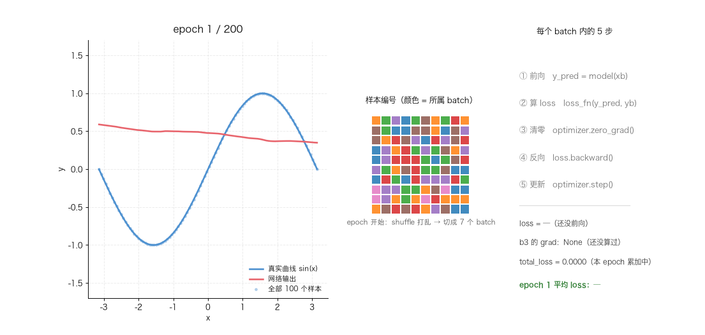

DataLoader 分批训练 · 逐帧演示
点击画面或按 → 下一帧，← 上一帧，空格键自动播放/暂停。

点击 → 下一帧画面怎么看
- 左边：蓝线是 sin 真实曲线，红线是网络当前输出，橙色大点是当前 batch 的样本，橙色竖线是这些样本的误差。
- 中间：100 个样本编号，颜色代表被分进了哪个 batch；黑框是正在处理的 batch。
- 右边：每个 batch 内的 5 步，橙色高亮是当前走到哪一步；下方实时显示 loss、梯度、total_loss。
点击画面或按 → 下一帧，← 上一帧，空格键自动播放/暂停。

点击 → 下一帧